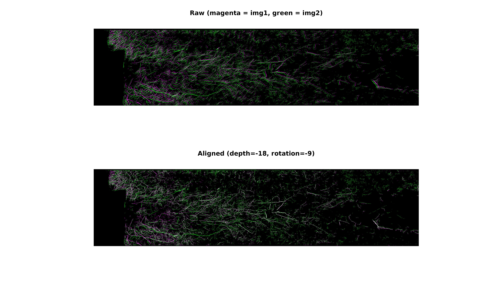

Rotation Bias and Rhythmicity Analysis with Rootopia
Johannes Cunow
Source:vignettes/Rotation_Bias_vignettes.Rmd
Rotation_Bias_vignettes.RmdRotation Bias Analysis
Introduction
This vignette demonstrates how to detect and correct for rotational bias in minirhizotron setups using the Rootopia package. In minirhizotron studies, the scanner tube is inserted at an angle into the soil and can rotate slightly between sessions. Because the CI-600 and similar scanners do not cover a full 360° arc, sequential images from the same tube may not perfectly overlap. Left uncorrected, this rotation introduces a systematic spatial bias — roots near the scan edges are observed in some sessions but not others.
Rootopia addresses this through four functions:
-
estimate_rotation_center()— locates the rotational zero point from tape coverage in a single image -
estimate_rotation_shift()— quantifies the pixel offset between two sessions using image correlation -
rotation_censor()— crops images to the shared, overlap region -
zoning(mode = "rotation")— splits the tube surface into slices along the rotation axis (circumference), so that root traits can be summarized separately for each slice
The last point matters beyond rotation correction itself: once the
tube circumference is split into slices, the rhythmicity()
/ fit_sine_curve() family — normally introduced for
time-series data — can be applied to the sequence of per-slice root
traits to test whether roots are distributed evenly around the
tube circumference, or whether there is a systematic top-down /
side-to-side pattern (e.g. more roots on the underside of the tube).
This is a spatial, not temporal, application of those functions
— see the Circumferential zoning
and rhythmicity section below.
Installation
# install.packages("remotes")
# remotes::install_github("jcunow/Rootopia")
library(Rootopia)
library(terra)## terra 1.9.34Workflow
1. Estimate the rotational center from a single image
estimate_rotation_center() detects the white adhesive
tape attached to the upper side of the tube. Because more tape is
visible on one side, the function infers where the top of the tube
(rotational zero) lies. It returns a pixel row index.
Since a tube has a fixed geometry, this only needs to be done once per tube — the rotational center does not change between sessions.
data(seg_Oulanka2023_Session01_T067)
img <- terra::rast(seg_Oulanka2023_Session01_T067)
r0 <- estimate_rotation_center(img)
print(paste("Estimated rotation center (row):", r0))Key parameters:
| Parameter | Description |
|---|---|
tape_brightness |
Brightness threshold (0–1) for classifying tape pixels |
search_area |
Fraction of image width to analyze (tape is near one edge) |
nclasses |
Number of unsupervised clustering classes |
tape_quantile |
Quantile used to align the brightness scale |
2. Estimate the rotation shift between two sessions
When the same tube is scanned in two different sessions, the scanner
may have rotated. estimate_rotation_shift() uses either
cross-correlation ("ccf") or phase correlation
("phase") on a shared depth window to find the pixel
offset. Phase correlation is generally more robust to brightness
differences between sessions.
data(seg_Oulanka2023_Session01_T067)
data(seg_Oulanka2023_Session03_T067)
shift <- estimate_rotation_shift(
seg_Oulanka2023_Session01_T067,
seg_Oulanka2023_Session03_T067,
cor_type = "phase",
fixed_depth_pixel = c(1000, 4000)
)## Warning in doTryCatch(return(expr), name, parentenv, handler): Image size
## mismatch detected; cropping to common extent
cat("Rotation shift (depth px, rotation px): ", shift[1:2], "\n")## Rotation shift (depth px, rotation px): -18 -9
# Visual inspection
estimate_rotation_shift(seg_Oulanka2023_Session01_T067, seg_Oulanka2023_Session03_T067, cor_type = "phase", select_layer = 2, overlay = T)## Warning in doTryCatch(return(expr), name, parentenv, handler): Image size
## mismatch detected; cropping to common extent
The returned vector is c(x.lag, y.lag) — the horizontal
(depth axis) and vertical (rotation axis) pixel shifts. A large vertical
shift means the tube rotated substantially between sessions.
Planned: a single helper that estimates
estimate_rotation_shift()between two sessions and then appliesrotation_censor()using that shift directly, so that aligning session coverage becomes a one-step operation. Until then, use the two functions as shown in steps 2 and 3.
3. Censor image edges to the shared overlap region
rotation_censor() crops each image so that only the rows
present in every session are retained. This eliminates the
non-overlapping margins and makes root counts directly comparable across
sessions.
Two modes are available:
-
fixed_rotation = FALSE— cuts proportionally based on the measured offset; output width varies -
fixed_rotation = TRUE— centers the crop on a specified row and forces a fixed output width; recommended when comparing multiple sessions
data(seg_Oulanka2023_Session01_T067)
img <- terra::rast(seg_Oulanka2023_Session01_T067)
# rotation center (absolute row) to center the crop on
r0 <- estimate_rotation_center(img)
# preview the crop (green = kept, red = cut) and apply it in one call.
# fixed_width must be <= image height (1144 rows here) to sit symmetrically.
censored <- rotation_censor(
img,
center_offset = r0,
cut_buffer = 0.02,
fixed_width = 800,
fixed_rotation = TRUE,
overlay = TRUE,
main = "Rotation censor: kept window (green) vs cut (red)"
)Note on tube geometry. The inner and outer tube diameters differ, so the observed root length slightly underestimates the true root length in the soil. A resize coefficient may be applied separately;
rotation_censor()does not handle this correction.
Circumferential zoning and rhythmicity
A minirhizotron image is a long, narrow strip that represents a slice
of the tube’s circumference, with depth running along one axis and the
rotation (circumferential) position running along the other.
zoning(mode = "rotation") divides the image along this
rotation axis into rotation_total_slices equal slices, and
rotation_slices = c(i, i) extracts a single slice
i.
Looping over slices gives a sequence of root-trait values indexed by
circumferential position. The rhythmicity() /
fit_sine_curve() functions — which fit
and test whether
— are agnostic to what x represents. Applied to this
sequence with x = slice index and the period P
fixed to rotation_total_slices (one full turn around the
tube), they test whether roots are distributed evenly around the
tube or concentrated on one side (e.g. a systematic top-down
bias from gravitropism, light incidence on one face of the installation,
or an installation-angle artifact).
Extract a root trait per circumferential slice
data(seg_Oulanka2023_Session01_T067)
root_layer <- load_flexible_image(seg_Oulanka2023_Session01_T067, scale = "binary", select_layer = 2,
output_format = "spatrast")
# rotation trim: drop the top 33% of rows
e <- terra::ext(root_layer)
root_layer <- terra::crop(root_layer, terra::ext(e[1]+ e[2] / 4, e[2], e[3], e[4]))
plot(root_layer)
# --> the trimming avoids noisy deep layer and tape artifacts at the top
# create circumferential zones
n_slices <- 48
slices <- slice_rotation(root_layer, n_slices)
# tallies from the binary mask: roots = 1, soil/background = 0
n_root <- function(s) { v <- terra::values(s, mat = FALSE); sum(v > 0, na.rm = TRUE) }
n_soil <- function(s) { v <- terra::values(s, mat = FALSE); sum(v == 0, na.rm = TRUE) }
slice_traits <- data.frame(
slice = seq_len(n_slices),
rootlen = sapply(slices, root_length, unit = "cm", dpi = 150), # cm
rootpx = sapply(slices, n_root),
soilpx = sapply(slices, n_soil)
)
# root length per observed area (root + soil pixels)
slice_traits$rld <- slice_traits$rootlen /
((slice_traits$rootpx + slice_traits$soilpx) * (2.54/300)^2)
#slice_traits$rld.fraction <- slice_traits$rld / sum(slice_traits$rld, na.rm = TRUE)Test for a circumferential (top-down) pattern
res <- rhythmicity(
x = slice_traits$slice,
y = slice_traits$rld,
fix_period = n_slices,
method = "F",
par_start = list(amp = 0.01, phase = 0, offset = mean(slice_traits$rootlen),
period = n_slices)
)
cat(sprintf("Mean: %.4f | Amplitude: %.4f | Phase (slice): %.2f | R²: %.3f | p: %.4f\n",
res$offset, res$amplitude, res$phase, res$R2, res$p_value))
cat("The top-down difference is", round((res$amplitude*2) / res$offset,2), " -> circa twice as large as the mean" )A significant, non-trivial amplitude indicates that root abundance
varies systematically with circumferential position — i.e. there is more
root material on one side of the tube than the other.
res$phase (and res$peakTime) identify
which slice the pattern peaks at.
Visualize the fit
slice_seq <- seq(1, n_slices, length.out = 200)
fit_seq <- res$amplitude *
sin(2 * pi / n_slices * (slice_seq + res$phase)) +
res$offset
plot(slice_traits$slice, slice_traits$rld, pch = 16, col = "gray50",
xlab = "Circumferential slice (1 = top, going around the tube)",
ylab = "Root Length Density (cm / cm2)",
main = "Root distribution around tube circumference")
lines(slice_seq, fit_seq, col = "coral", lwd = 2)
abline( a = res$offset, b = 0, col = "gray40", lty = 3)
segments(x0 = res$peakTime,
x1 = res$peakTime,
y0 = res$offset,
y1 = res$offset + res$amplitude,
lwd = 2, lty = 2,
col = "gray40")
segments(x0 = res$peakTime + res$period/2,
x1 = res$peakTime + res$period/2,
y0 = res$offset,
y1 = res$offset - res$amplitude,
lwd = 2, lty = 2,
col = "gray40")
legend("topright",
legend = sprintf("A = %.4f, R² = %.3f, p = %.4f",
res$amplitude, res$R2, res$p_value),
bty = "n")
# cross section view
library(ggplot2)
inner <- 6
ggplot(slice_traits, aes(slice, rld + inner)) +
geom_col(fill = "steelblue") +
coord_polar(start = pi) +
xlab("") + ylab ("")+ ggtitle("Circumferential Root Length Distribution")+
theme_light()+
theme(axis.text = element_blank()) +
annotate("rect",
xmin = -Inf, xmax = Inf,
ymin = 0, ymax = inner,
fill = "white", color = NA)Going further: the same slice loop can be combined with
slice_rotation(mode = "both")to additionally split each circumferential slice by depth bin, producing a slice x depth grid. Fittingrhythmicity()separately within each depth bin (x = slice, y = trait per slice) tests whether the circumferential pattern is consistent with depth or changes from shallow to deep — i.e. a genuine top-down amplitude gradient.
Future directions
Two extensions are planned and not yet implemented:
-
Combined rotation-shift + censor helper (mentioned
in step 2): estimate
estimate_rotation_shift()between two sessions and automatically applyrotation_censor()with that shift, so aligning session coverage is a single call. -
Estimating the rotation center from the amplitude
peak: if the circumferential analysis above reveals a strong,
consistent sinusoidal pattern, the fitted phase (
res$phase/res$peakTime) marks the circumferential position of peak root density. This could be used as a data-driven alternative or complement toestimate_rotation_center(), which currently relies only on tape coverage. Though, field calibrations are absolutely the preferred option.
Further reading
- Batch Processing — the recommended starting point for processing multiple images
- Minirhizotron Scans — step-by-step depth analysis workflow
- Function reference
- Source and issues: https://github.com/jcunow/Rootopia